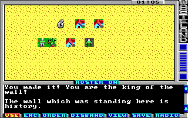

Game Tutorial Step 8: Changing tiles
With action class 4 you can hide the real tile of a square with an other tile. This is used when opening doors or hiding bases and secret hallways. In this example we will modify the check action we created in Step 6 so we can destroy the wall we have climbed with some explosives.
Here is the mask code:
<actions actionClass="4"> <mask id="0" message="11" tile="71" /> </actions>
This simply hides the tile of the square with tile id 71 and displays message string 11 when the player steps on the square.
Now this time we do not connect this action to a square directly. Instead we connect it to an other action. In this case it's a new check item in the wall check we created in Step 6. Just add these lines to the check:
<item value="6" newActionClass="4" newAction="0" /> <item value="7" newActionClass="4" newAction="0" /> <item value="8" newActionClass="4" newAction="0" />
This means, when the player uses one of the explosives he got from the loot bag defined in Step 4 (TNT, Plastic Explosives or Grenades) on the wall then the wall square is set to our new mask action. And this means the wall tile is replaced with a somewhat gray looking tile and the check is no longer connected to the tile.
Here is the new string we use in the mask action:
<string id="11">\rThe wall which was standing here is history.\r</string>
Pack the new game file and try it out. First get one of the explosives from the loot bag we defined in Step 4 and then use it against the wall. KAWOOM!
You can download the current state of the map here: map01.xml.
